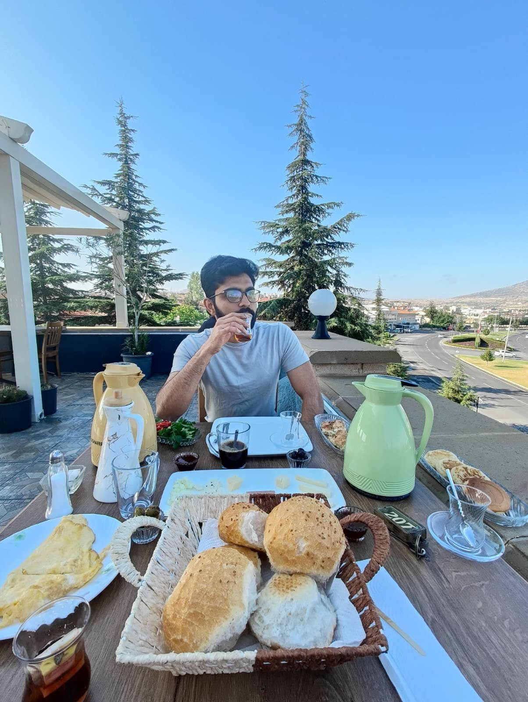
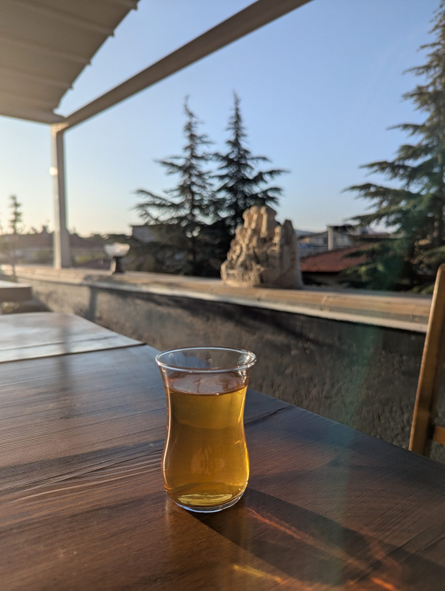
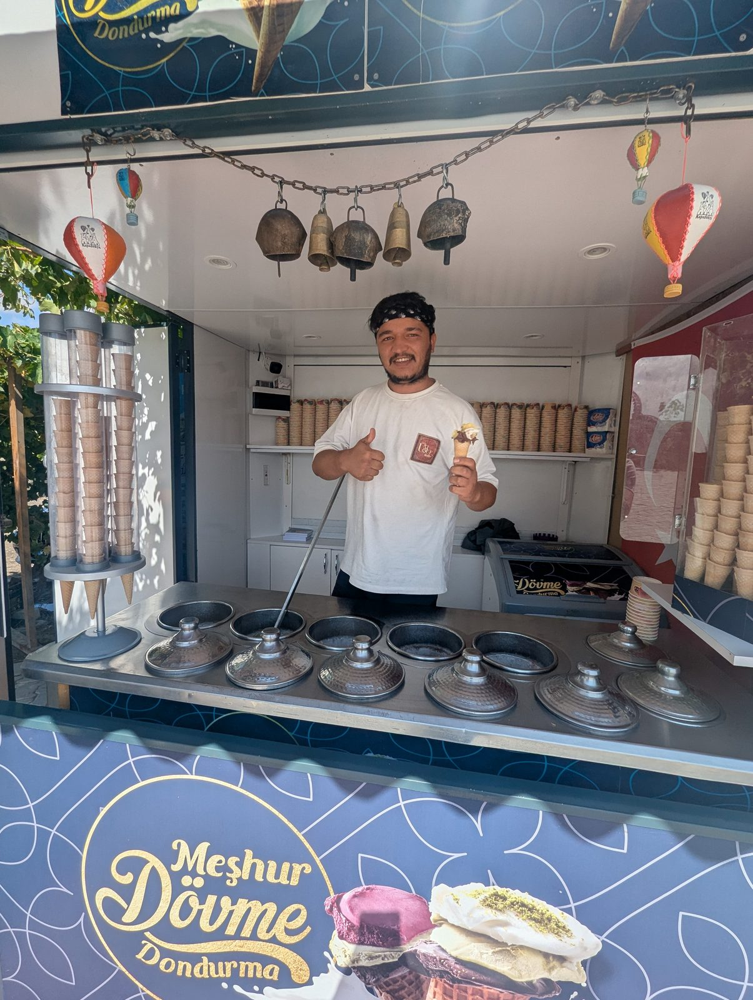
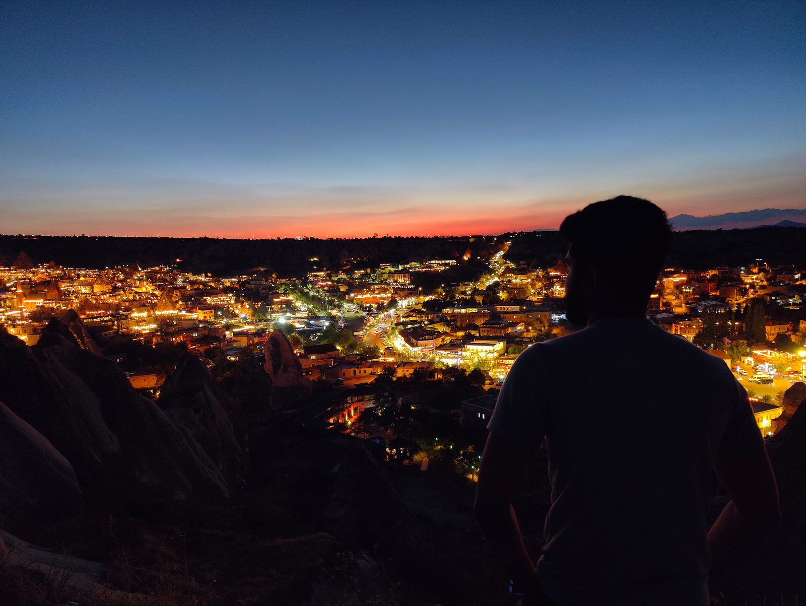
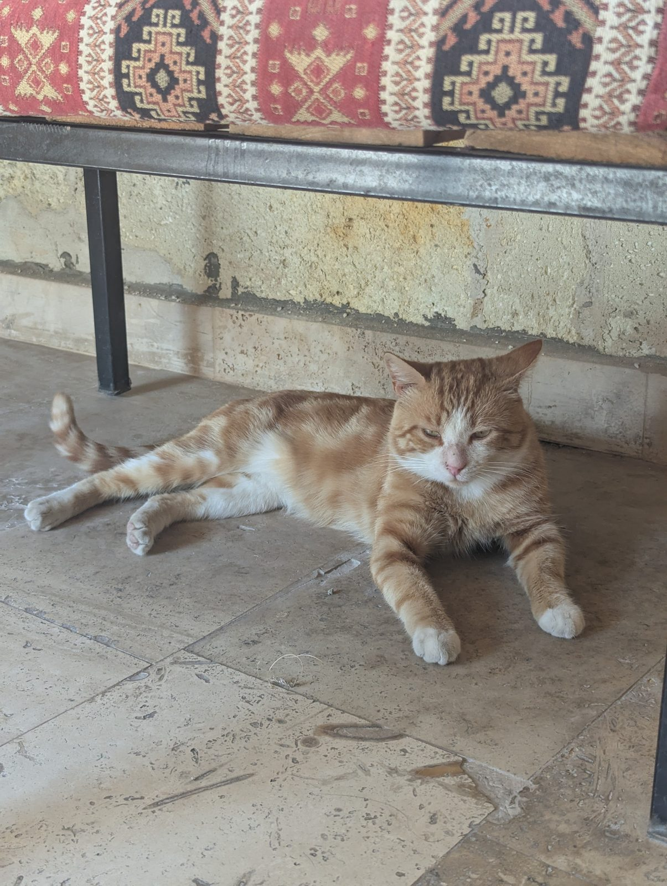
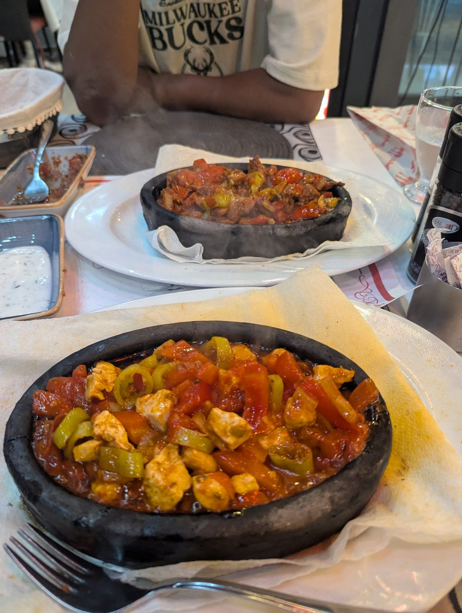

Landing in Istanbul
The trip began the moment I landed in Istanbul.
The Red Tour: fairy chimneys
From Istanbul I went to Cappadocia, where I did the Red Tour and explored the fairy chimneys.
Down into the underground caves
The tour took us down into the underground caves.
A famous pottery
We also stopped at a famous pottery.
Hot air balloons
Later, I got to see the hot air balloons.

Quad bikes through Pigeon Valley
Then came a quad bike ride through Pigeon Valley.
Out on the Mediterranean
Next stop was Antalya, where they showed us around the Mediterranean Sea by boat, and we had lunch out there.
The scuba dive
And then the highlight: a scuba dive in the Mediterranean.
Home with memories and memorabilia
Then I returned home with a lot of memories, and a fair bit of memorabilia.





